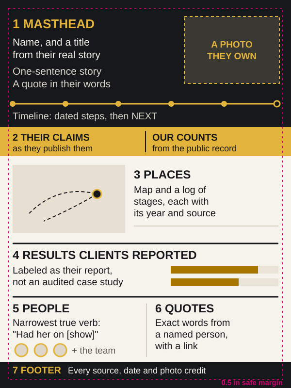

Make an 18 x 24 poster of someone's real story.
This kit turns a person's public record into a poster they can frame. It shows their story, their stages and what clients said. The script will not print a fact with no source or a photo with no owner's OK.

What's in the kit
- poster-template-18x24.htmlThe 18 x 24 in artboard. Every empty slot shows as a pink box, so nothing unfinished can ship.
- render_poster.pyFills the template, checks it and writes the print PDF and preview with a version number and date in the name. It never overwrites an earlier version.
- facts-template.csvOne row per printed fact, with its source, who is making the claim and the date you checked it.
- photos-template.csvOne row per photo: who owns it, where the permission is kept, the original file and its size.
- QA-CHECKLIST.mdWhat to check before printing, and which checks the script runs for you.
- PROMPT.txtThe whole recipe as instructions to paste into an AI app.
- test_render_poster.pyTests that prove the script refuses what it should, on a made-up poster.
Copy the two templates to facts.csv and photos.csv before you fill them.
Making the PDF needs a computer, not just a chat app: Python 3.9+, pip install playwright pypdf pillow numpy, then python3 -m playwright install chromium. An AI app can fill the sheets with you. A computer renders the poster.
Run it with an AI
Open the recipe in your AI app, then replace the name and website in brackets before you send it. The AI can do the research and fill the sheets. Rendering the PDF still needs a computer.
Open in Claude Open in ChatGPTRead the full recipe
Make an 18 x 24 inch personal brand poster for [SUBJECT NAME] ([THEIR WEBSITE]). It should tell their real story, and every fact on it must be one a stranger can check.
Use the free kit at https://local-service-spotlight.github.io/task-library/kits/poster/ : poster-template-18x24.html, render_poster.py, facts-template.csv, photos-template.csv and QA-CHECKLIST.md. Copy facts-template.csv to facts.csv and photos-template.csv to photos.csv before you fill them. The full recipe is the Task Library task "make-a-personal-brand-poster".
The render steps need a computer with Python 3.9+, Playwright with Chromium, pypdf, Pillow and numpy. Most chat apps cannot run them. If you cannot run code with a browser, do steps 1 to 4 with me, then hand the sheets to someone who can.
Work in this order and stop to show me your work after steps 3 and 6.
1. Collect the public record. Use only sources you can open: their own site and About page, their company's site and team page, their media and speaking lists, their published posts and books. Write down every URL.
2. Pick a theme from their real story, not a generic one. For example, a former pilot who now coaches sales teams could get a flight log, and a chef who now owns restaurants could get a menu. If no true theme exists, use a plain one. Never invent a title, nickname or award. A theme line is design, so it must not read like a title they have not used.
3. Fill facts.csv, one row per printed fact: the exact text, who is making the claim (subject, counted, reported, third-party or design), the source URL, the words the source says, the date you checked, and a status. Use verified after you open the source and find the words. Use pending-release when the page is not live yet; the final render checks it with --live-check.
- Keep the company's published claims apart from numbers you counted yourself.
- Remove duplicates before counting. An episode posted as audio and as video counts once, and a short clip is not an interview.
- Match titles to their own About page. When sources disagree, note it.
- Label results that clients reported to them as their report, not audited case studies.
- Use the narrowest verb the source supports for each person ("Had him on [show]"). Never "friend" or "mentor" unless the source says so.
- Drop anything you cannot source, even if it sounds good. Write [FILL: what is missing] for a value you are still waiting for; the final render refuses it.
4. Fill photos.csv. Before a photo goes on the poster, record who owns it, where the permission is kept, the exact file, and either the original file's pixel width (native_px_w) or camera_original yes for a file straight from the camera. A photo found on a public post is not permission. Use the client's own photos or get the owner's written OK. Never pull photos of other public figures off the web. Ask the client's team for photos they own. If the right photo has no permission yet, do not print. Wait for the owner's written OK, or use a photo the client owns.
A map is optional. The kit has no map tool: draw one as SVG, or mark the places-map row omit.
5. Render a proof: python3 render_poster.py --template poster-template-18x24.html --facts facts.csv --photos photos.csv --subject "[NAME]" --deliverable "[POSTER NAME]" --version 1 --date [YYYY-MM-DD] --draft
A draft never places a photo without permission. Fix every FAIL. Read each WARN at 100 percent zoom.
6. Render the final without --draft. It must pass: exactly 18 x 24 in (1296 x 1728 pt), fonts embedded, no text under 9 pt, no text within 0.5 in of any edge, photos at 240 ppi counted on the original pixels (150 to 239 warns, under 150 fails), no [FILL: ...] placeholder or empty photo box, and a PDF title with the version and date. Every new version gets a new number. Never overwrite an earlier file. If the printer asks for bleed, add --bleed 0.125. The kit makes RGB files, so ask the printer about color.
7. Give me the PDF, the preview PNG, the QA JSON and the fact sheet, plus a list of anything the client's team must confirm, such as name spellings and photo permissions. Do not send anything to print until the client approves the proof.
8. Write a short run record: what you made, every version and what changed in it, the checks and their results, what is still open, and who acts next.This page saves nothing and sends nothing. A recipe leaves your phone only when you tap a button, and only to the app you picked.
How it works
Collect the record
Their own site, company site, media and speaking lists and posts. Write down every link.
Find the theme in their story
A former pilot who now coaches sales teams might get a flight log; a chef who owns restaurants, a menu. If there is no true theme, keep it plain.
Fill the fact sheet
Their claims and your counts stay apart. Duplicates come out. Each person gets the narrowest true verb.
Clear every photo
Record the owner and the permission first. Use the client's own photos or the owner's written OK.
Proof, fix, then print
A draft first, then a final that passes size, fonts, margins and resolution, with a new version number each time. Ask the printer about bleed and color.
The rules that keep it honest
- A number without a source comes off the poster.
- Results a client reported are labeled as their report, not an audited case study.
- A photo found on a public post is not permission.
- The client's team approves the proof before anything is printed.